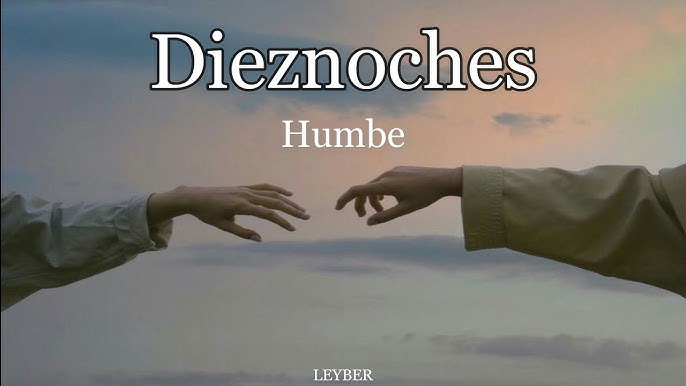

Acerca del Álbum
ENTROPÍA es uno de los álbumes más reconocidos de Humbe. En este proyecto, el artista presenta una propuesta musical innovadora que mezcla pop, electrónica e influencias alternativas para crear una experiencia sonora única.
El concepto del álbum gira alrededor de los cambios, el caos, las emociones intensas y la transformación personal. Cada canción representa diferentes momentos de la vida y muestra cómo las personas evolucionan a través de sus experiencias.
🎵 Canción Destacada
Entre los temas más populares de esta etapa destaca "El poeta", una canción que ayudó a consolidar el éxito de Humbe gracias a su letra emotiva y a la conexión que logró con sus seguidores.
🌌 Significado de ENTROPÍA
La palabra "entropía" se relaciona con el cambio y el desorden dentro de un sistema. Humbe utiliza este concepto para representar los procesos de crecimiento, aprendizaje y transformación emocional que todas las personas experimentan a lo largo de su vida.
✨ Impacto del Álbum
ENTROPÍA fue muy importante para la carrera de Humbe porque permitió que más personas conocieran su música. Gracias a este trabajo, el artista demostró su capacidad para innovar y crear canciones profundas con una identidad propia.
🎤 Legado
Muchos seguidores consideran ENTROPÍA uno de los proyectos más especiales de Humbe debido a su originalidad, sus letras reflexivas y la atmósfera emocional que transmite en cada una de sus canciones.
🎵 Canciones Destacadas

El poeta |
 Dieznoches |